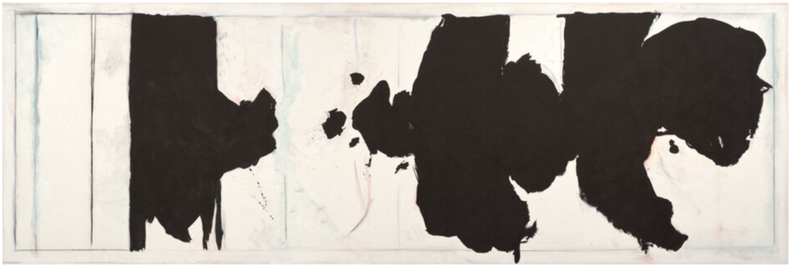

Friendly advice on graduate school applications for doctoral admissions
01 February, 2025

The contents of this document are compiled purely for academic purposes and intended to help graduate school applicants seeking doctoral admissions. Nothing written here is 'correct' in any absolute sense and is based on my experiences as an applicant.
Curriculum Vitae - CV
Your CV represents your accomplishments and experience as an academic and helps to establish your professional image. Most importantly, follow the conventions of your field! Different academic disciplines have different standards and expectations, especially in the order of categories. Check out CVs from recent graduates of your department, and others in your field, to ensure you are following your field's norms.- There is no single best format. Refer to samples for ideas, but craft your CV to best reflect you and your unique accomplishments.
- As far as text-styling is concerned, do not use more than three colors in the entire document, a rule-of-thumb is : one for the general body, one for tag texts/thematic phrase texts which require subtle attention like venues, institute names etc. and lastly one for links.
- Stick to a common font, such as Times New Roman, using a font size of 10 to 12 pt. Use highlighting judiciously, favoring bold, ALL CAPS, and white space to create a crisp professional style. Avoid text boxes, underlining and shading; italics may be used in moderation.
- The resultant CV should not look cramped with information. A good practice which often proves to be very helpful is to first make a master Resume with all the informations and details included, with proper styles/formatting. And then edit it to get it trimmed to the appropriate size version.
- Keep locations, dates and less important information on the right side of the page. The left side should have important details like university, degree, job title, etc.
- Be strategic in how you order and entitle your categories. The most important informa- tion should be on the first page. Within each category, list items in reverse chronological order.
- A CV created using LaTeX, almost in all cases, appears more professional than the same CV made using any other text formatting software.
Overleaf has an abundant collection of tex templates of CVs, but for applicants in STEM (especially for math majors) it is recommended to come up with personal tex projects. The .tex preambles inthis repository might come handy! - It is okay if you do not have significant projects and experiences to fill up your CV, but do not fill it with irrelevant information or out-of-context jargon. Do not include any material in your CV which is untrue! Furthermore, it is equally important to not put any experience or information which cannot be verified or has absolutely no robust documentation. Your CV may get no more than thirty seconds of the reader's attention, thus it is not prudent to present points leaving the reader with no option other than believing you at face value.
- Although it is not official, most academic committees use an algorithmic setup to cut CVs and resumes to two pages per document. To be on a safer side, do not make your CV to be of more than 2 pages. Pair this point with point 4. mentioned above.
- A pattern which I have seen in almost all the professional CVs is the mention of relevant referees along with their contact details. It is an unwritten non-negotiable rule in academia to compose resumes.
- Do not use personal pronouns (such as I) and avoid full sentences. Abbreviate in a sensible manner and use appropriate action verbs while lisiting details. Most importantly, use a narrative style of writing.
- Personalisation of the details presented in your CV with respect to the
- position you are applying for;
- the lab/research group you intend to join;
- the researcher or the professor you wish to work under
Sample. The full-professional resume/the master CV, which I have looks like
Statement of Purpose - SoP
Your Academic Statement of Purpose or SOP is a writing sample and a part of the screening process. By putting your best foot forward, you can increase your chances of being interviewed. A good way to create a response-producing SOP is to highlight your skills or experiences that are most applicable to the job or industry and to tailor the letter to the specific organization to which you are applying.Note that each document in your application should stand alone, telling the same story in a different way. For example, the CV lists all of your academic accomplishments, while the cover letter will emphasize the most important and relevant parts of your background. The letter should not read as a CV in prose, and should summarize and encapsulate the points you expand upon in your research statement and teaching statement. Allow your professional voice to shine through in your writing to express your sincere enthusiasm for your work and the confidence that you are the best candidate for the particular position, department, or institution.
To state in a much minimalistic way, the document shall essentially have three parts answer to the following :
- Why are you writing this document? State about your candidature for the position.
- What is your background? How does your background make you a good fit for the position?
- What value would you bring to the position? State your plausible future plans.
- First and foremost, write like a child and edit like a scientist! Begin with telling the story/fact about your academic journey which you otherwise are afraid of sharing. At this stage, do not bother about the size the content volume.
- Continuing from the above, edit your essay with keeping the most precise and the most creative outlook in your mind. An essay devoid of grammatical, punctuation and spelling errors is the bare minimum!
- Altough it is not official, but most of the academic committees have algorithmic setup to cut SOPs and Cover Letters to 2 pages of a single document which follows a 11pt font size or above. To be on a safer side, do not make your SOP to be of more than two pages and use at least an 11pt font size. Use a standard font prevelant for official purposes & do not use Comic Sans!
- Try to use a narrative style of writing tailored for the research group you are intending to join. Include graceful transitions between paragraphs, something that is often difficult to achieve.
- Put yourself in the reader's shoes. What can you write that will convince the reader that you are ready and able to do the job? Do not use repetitive words.
- Reference skills or experiences from the research descriptions of your target research group/lab and professor. Additionally, draw connections to your credentials mentioned in your CV.
- While you may be tempted to use a generative AI tool to compose your letter, be deliberate and specifc with your prompts. Remember to edit the results carefully and add your own voice/style to the letter. It is notable that contemporary generative AI systems exhibit a poor balance in word usage, in particular, words like 'complex' and 'creative' will directly imply that you have used AI mindlessly, even in cases when you have not! That is sad, but true.
- One of the most underrated facts in general as a student is that, it is not just your strengths which give shape to your academic identity. Rather, it is the unique blend of your strengths and weaknesses which makes your identity standout. A feature of advantage is to include and describe how you manage when your academic/ research plans go south. How do you overcome your limitations in situations of adversity?
- Avoid flowery language. Remember that, despite several parts/requirements in an application, your SOP remains to be a very important part of it. Often times, it is the first and the single chance for you to present your academic self to the recruiting entity. You never get a second chance to make a first impression!
Letter of Recommendation - LoR
- The crux of any LOR is to support your candidancy and provide clarity on your ability to undertake advanced studies in the intended area of interest. It is not prudent to aim that your referee writes things about which can be fetched from your other documents like transcripts. For example, you would not want an LOR mentioning you did/do your assignments and homeworks on time OR you performed well in a particular course in college. Ideally, your referee must be able to describe your intrinsic academic qualities/details which cannot be fetched otherwise. For example, how you tackle challenging problems, or the quality of research aptitude in general. Hence, you should prioritise referees who have supervised you in projects, thesis or multiple thematic elective yet relevant courseworks instead of just a single madatory course from the curriculum.
- The requirement of LORs is an inevitable component of your grad school applications. Furthermore, in many places LORs are considered to be an important criteria of competency, rather than a minimum eligibility criteria. I have personal experience of referees being unprofessional while writing LORs, even when situations where dire for me. Hence, use all your discretion before selecting your referees, and not after the job is done.
- You might consider describing the project/programme or the works of target research group to your referees in order to aid them. However, do not share your exact SOP for this purpose.
- It is your responsibility, and yours alone, to keep track of application deadlines. With- out the minimum number of LORs submitted within the appropriate deadlines, your application would be considered incomplete and would not be processed. Hence, reach out to your referees well before deadlines, giving them sufficient time to write fruitful LORs.
Cold Emails
Cold emailing potential PhD advisors is often the first direct contact you will have with faculty members who might supervise your doctoral research. A well-crafted email can open doors, while a poorly written one can close them before you even apply. Unlike your SOP, which addresses a committee, your email reaches a single person who is likely receiving dozens of similar messages weekly. Your goal is not to impress with verbosity but to demonstrate genuine interest, preparedness, and fit.- Research before you write. Do not send generic emails to multiple professors with only the name changed. Read at least three recent publications from the professor's research group, understand their active projects, and identify where your interests genuinely align. If you cannot articulate a specific connection to their work, do not email them.
- Keep it concise. Aim for 150-250 words maximum. Professors are busy; they will not read a lengthy narrative. Your email should be scannable in under 60 seconds. If you cannot convey your main points in three short paragraphs, revise until you can.
- Structure your email with precision. A minimalistic yet effective framework is :
- Opening : State your purpose clearly (seeking PhD position for Fall 20XX).
- Body : Mention your current position/degree, one or two relevant research experiences, and specific connection to their work.
- Closing : Express genuine interest, mention you are happy to provide additional materials, and thank them for their time.
- Do not ask if they are accepting students in the body of the email. This information is usually available on department websites or faculty pages. If you cannot find it, you may ask at the end, but only after demonstrating your research fit. Asking this question first signals you have not done your homework.
- Attach a targeted CV, but do not attach your full SOP or research statement unless explicitly requested. Your email itself should be self-contained; the CV is supplementary. Name your attachment professionally : "LastName_FirstName_CV.pdf" not "Resume_final_v3.pdf" or "myCV.docx".
- Use a professional email address. If you are still using an undergraduate email or a personal address like "mathgenius2024@gmail.com", create a simple professional one : firstname.lastname@domain or similar. Your institutional email is ideal if you have one.
- Subject line matters. Use clear, specific subject lines: "PhD Inquiry - Fall 2026 (Applied Analysis)" or "Prospective PhD Student - Spectral Methods Background". Avoid vague subjects like "Question" or "PhD Program" or overly casual ones.
- Do not oversell yourself, but do not undersell either. Phrases like "I am extremely passionate" or "I would be honored to work under your esteemed guidance" come across as insincere. Instead, be direct : "I am interested in pursuing doctoral research in spectral methods, particularly applications to elliptic PDEs." Let your specific knowledge of their work demonstrate your genuine interest.
- Mention any connection or context if applicable. Did you attend their seminar talk? Did a mutual colleague suggest you reach out? Were you impressed by a specific paper? These details help your email stand out, but only if they are truthful. Do not fabricate connections.
- Follow up strategically. If you do not receive a response within 10-14 days, a polite follow-up is acceptable. Keep it brief : "I am writing to follow up on my email from [date] regarding PhD opportunities in your research group." Do not follow up more than once. No response often means no interest, and persistence beyond a single follow-up can be perceived as pushy.
- Timing matters. Avoid emailing during obvious busy periods : right before major conferences, during exam weeks (if you know the academic calendar), or late December/early January. Mid-semester periods (September-October or February-March) tend to be better.
- Proofread obsessively. A single typo in a short email is more damaging than in a two-page SOP. Use proper grammar, avoid contractions, and check that you have spelled the professor's name correctly. Addressing "Dr. Smith" as "Professor Smyth" will immediately disqualify you.
Over the years, I have accumulated the following DO NOTs and common mistakes to avoid while constructing a cold email. Following are some errors that consistently harm applicants :
- Starting with "I hope this email finds you well" or similar pleasantries. It is unnecessary and wastes the reader's time.
- Writing in the third person about yourself ("The applicant has strong computational skills"). This is bizarre and unprofessional.
- Asking the target professor to "guide you" or "mentor you" before you have even been admitted. You are applying for a position, not seeking a personal favor.
- Including irrelevant personal information. Your hobbies, your inspiration from childhood, your financial situation - none of this belongs in a cold email.
- Expressing desperate urgency ("I must start my PhD this year"). I understand that sometimes, careers timestamp situations tends to become tense but desperation is not attractive to potential advisors.
- Using overly formal or archaic language ("I humbly beseech your consideration"). Write professionally, not like a Victorian novel.
Additional Resources
The guidance presented in this document draws primarily from my personal experiences as a graduate school applicant. However, foundational insights were gathered from seniors at IISERB and various programmes conducted by the Student Development Council, IISERB. If you are a current undergraduate at IISERB, I strongly recommend reaching out to your seniors for personalized advice tailored to your specific circumstances. Direct mentorship often proves more valuable than generic written guidance.I am particularly grateful to Sreepadmanabh M
Over and above the contents presented so far, please consider refering the following resources to get further help!
- Undergraduate Resource Series, Mignone Center for Career Success, Harvard University Faculty of Arts & Sciences.
[pdf] - Graduate Student Information Services, Office of Career Services, Harvard University.